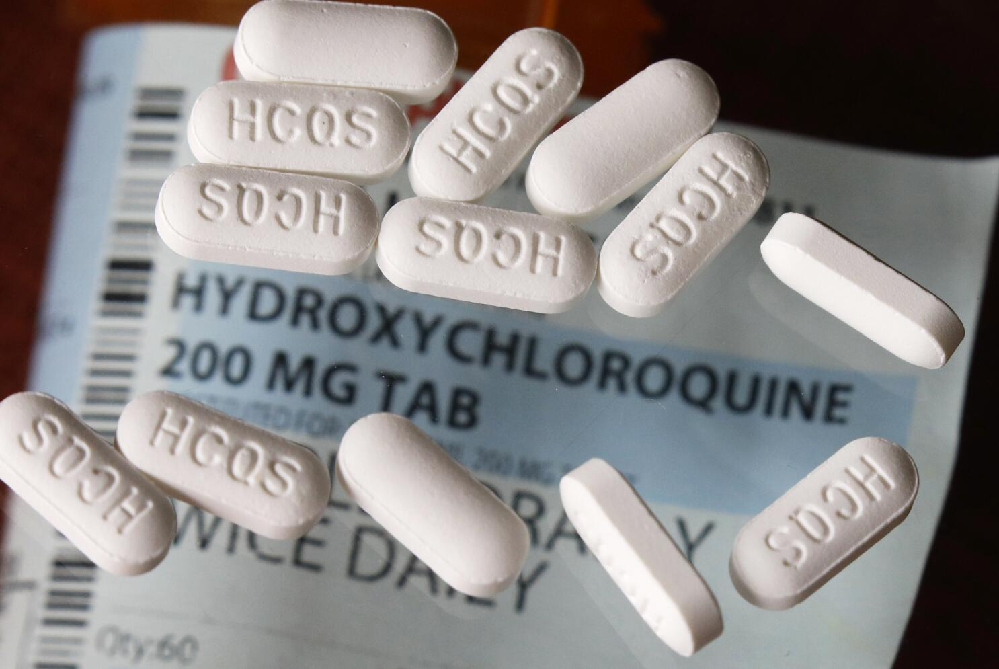

We chose to prioritize lowering the percentage of parasites with high resistance and to not support the cost as much. From what we learned in the natural selection unit, when there are mutations that make the malaria have a higher chance at reproducing, (having high resistance to the cure) that adaptive trait will spread through the entire population over many generations, so the drug will not work on them. To reduce this, we can lower the percentage of parasites that have high resistance so they will take much longer for the resistance trait to spread, and that will cause the drug to be effective for the longest amount of time. We decided to trade off cost with that because in most of our testing, the lower cost options were always lacking in more than one category. Our data showed that in one of our better low-cost options, when costing $1900 the cure still caused an increase in parasite population, while also giving moderate side effects. All of this told us we should make this trade off because having low cost sacrificed too much, and low parasite resistance was very important.
As said before, Malaria is a huge problem in parts of the world stricken with poverty, such as Africa. With this formula, we hope to deliver affordable medication to poor communities in said areas. For example, we can bring this to children in Africa who can't pay for expensive treatments. This formula proves to be effective at every criteria.
